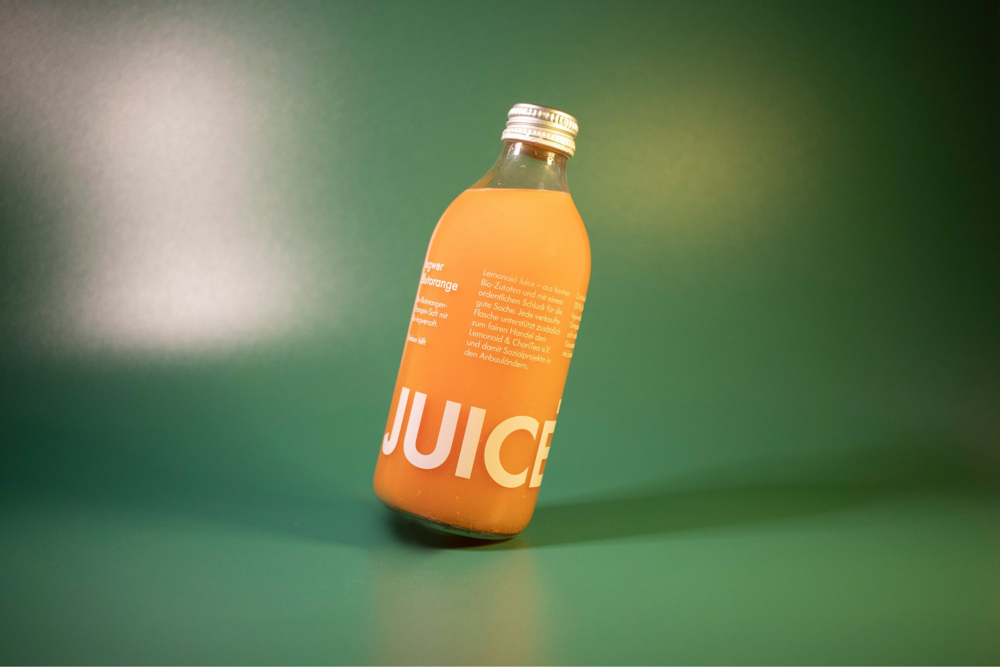
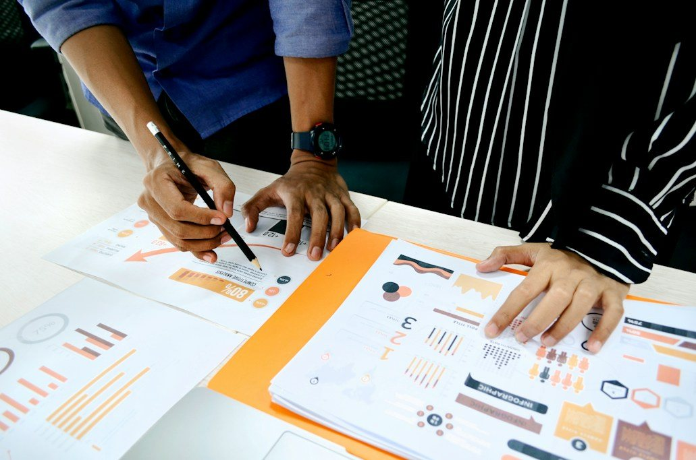
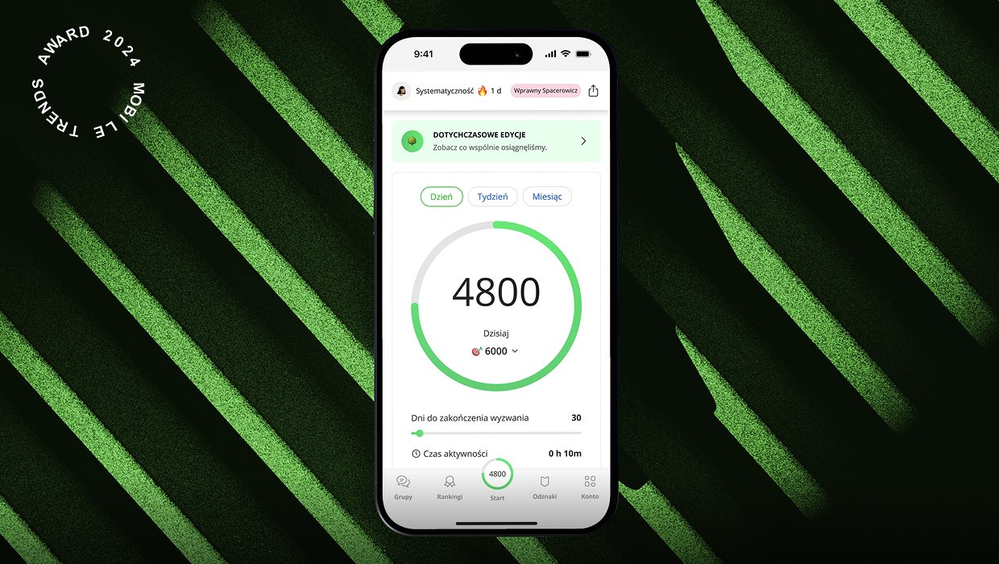

15/18
Uczestników badania pozytywnie oceniała możliwość dopasowania do swoich potrzeb.


Kontekst biznesowy
Klient, produkujący soki i suplementy w płynie, chciał wykorzystać istniejącą linię produkcyjną do stworzenia usługi personalizowanej suplementacji w płynie.
Cel: zweryfikować potencjał nowego modelu biznesowego i możliwość zbudowania konkurencyjnej usługi.
Od hipotez do rekomendacji
Poznanie kontekstu biznesowego, wizji produktu i założeń projektu
Określenie grup docelowych, hipotez i pytań badawczych
Ankieta rekrutacyjna (122 odpowiedzi) i 18 wywiadów pogłębionych
Analiza rynku, ofert konkurencji i dostępnych modeli personalizacji
Połączenie wyników badań z analizą rynku oraz identyfikacją szans i ryzyk
Ocena potencjału i wykonalności pomysłu
Research
Badania pokazywały, że zainteresowanie personalizacją istniało. Jednocześnie użytkownicy oczekiwali czegoś więcej niż indywidualnie dobranego zestawu suplementów.
Uczestników badania pozytywnie oceniała możliwość dopasowania do swoich potrzeb.
Suplementacja wynikała najczęściej z określonej potrzeby, np. objawów, niedoborów, rekomendacji lub chęci poprawy samopoczucia.
Użytkownicy oczekiwali widocznych efektów, możliwości modyfikacji i jasnego powodu kontynuowania suplementacji.
Znaczenie miał skład, opinie, rekomendacje, cena i transparentność informacji
Personalizacja była atrakcyjna, ale sama w sobie nie stanowiła wystarczającej wartości. Użytkownicy potrzebowali wiarygodnego rozwiązania, któremu mogliby zaufać.
„Personalizowana suplementacja to rzecz ekonomiczna, bo nie trzeba eksperymentować, szukać - idzie się ustaloną z góry drogą.”
„Jak jest dobrze, to się nie suplementuję, jak jest źle – to wtedy zaczynam.”
„Leki i suplementy nie są od tego, żeby były smaczne.”
„Jestem na to strasznie wrażliwa, jak ludzie mówią o zdrowiu, ale nie przedstawiają badań.”
„System medycyny zachodniej nie jest oparty na holizmie.”
„Jak przyszła pandemia, to mocniej zaczęłam sięgać po suplementy, żeby utrzymać zdrowie w najlepszej kondycji.”
„Dietetyk i lekarz mają równe kompetencje w zakresie suplementacji, choć wydaje mi się, że lekarz może mieć większe.”
„Lekarz nie jest mi potrzebny, tylko dietetyk lub specjalista od żywienia.”
„Chciałabym skorzystać z tego programu testowo przez miesiąc, zanim zdecyduję się na dłuższą subskrypcję.”
„Bez suplementacji to trochę słabo.”
„Wygląd i waga to motywatory, które sprawiają, że biorę suplementy.”
Twarze uczestników zostały zmienione przez AI aby nie upubliczniać ich wizerunku
Rynek
Analiza konkurencji pokazała, że rynek oferował już wiele elementów, które miały stanowić wartość CTRL+

Treści eksperckie i materiały edukacyjne
Konsultacje dietetyczne i specjalistyczne wsparcie
Wykorzystanie wyników badań i testów do stworzenia suplementów szytych na miarę
Gotowe zestawy suplementów z dostawą pod drzwi
Quizy, konfiguratory i indywidualne zestawy
Certyfikaty, badania, opinie klientów
Aplikacje i programy długoterminowe
Decyzja
Problemem było znalezienie wystarczająco silnej przewagi
Potwierdzona, zainteresowanie personalizacją suplementacji istniało
Niewystarczająca - konkurencja oferowała już podobne rozwiązania, a rynek powoli się nasycał
Niewystarczająca - skala potrzebnych kompetencji i zasobów przekraczała możliwości firmy
Ograniczenia
Stworzenie jakościowego produktu z uzasadnionymi i właściwie dobranymi dawkami
Dostęp do specjalistów i konsultacji
Bezpieczne wykorzystanie wyników badań i danych klientów
Personalizacja, monitoring i obsługa programu
Edukacja, budowanie wiarygodności i pozyskiwanie klientów
Obsługa, logistyka i zarządzanie długoterminową relacją z klientami
Wynik
Potrzeba istniała, ale brak przewagi rynkowej nie uzasadniał inwestycji. Wstrzymanie projektu pozwoliło uniknąć kosztownego wdrożenia.
“Nie zawsze projektujemy rozwiązanie, czasami pomagamy w podjęciu świadomej decyzji, żeby go nie budować”

Aplikacja mobilna CSR

Konwersja | Omnichannel | Lojalność
Placeholder
Marka spożywcza planowała wejście na rynek spersonalizowanej suplementacji. Discovery miało zweryfikować potencjał biznesowy i zasadność inwestycji.
15 z 18 badanych dostrzegało wartość personalizacji, ale barierą było zaufanie do marki i wiarygodności medycznej.
Planowane funkcjonalności były już standardem u konkurencji.
Projekt wymagał kosztownej budowy całego ekosystemu: technologii, ekspertyzy medycznej i marketingu.
Zatrzymanie projektu przed fazą UI/DEV
Zamiast inwestować w produkt o niepotwierdzonym potencjale, firma uniknęła kosztownego wdrożenia i mogła przekierować budżet na inne inicjatywy.